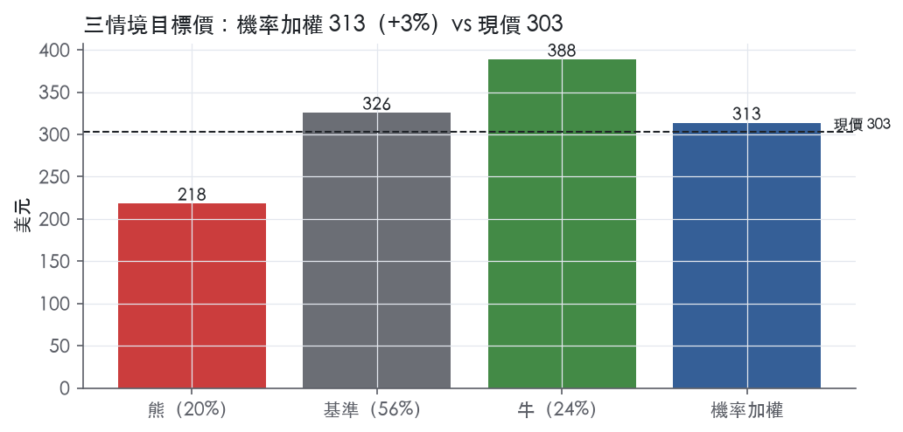
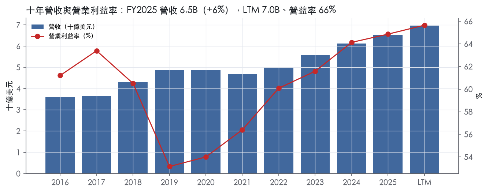
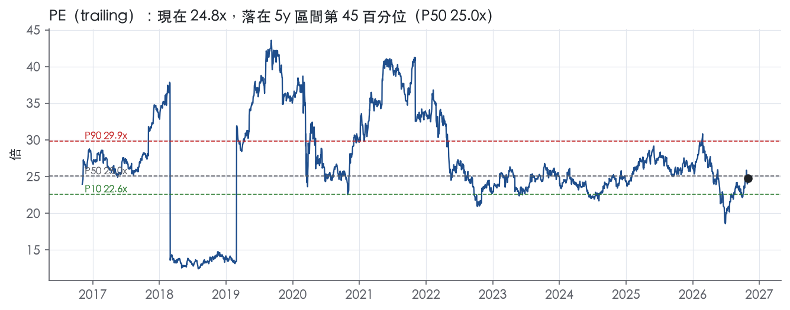
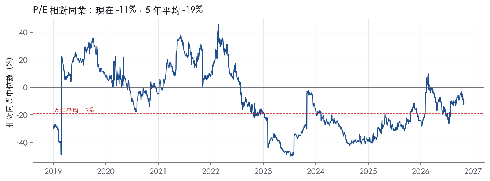
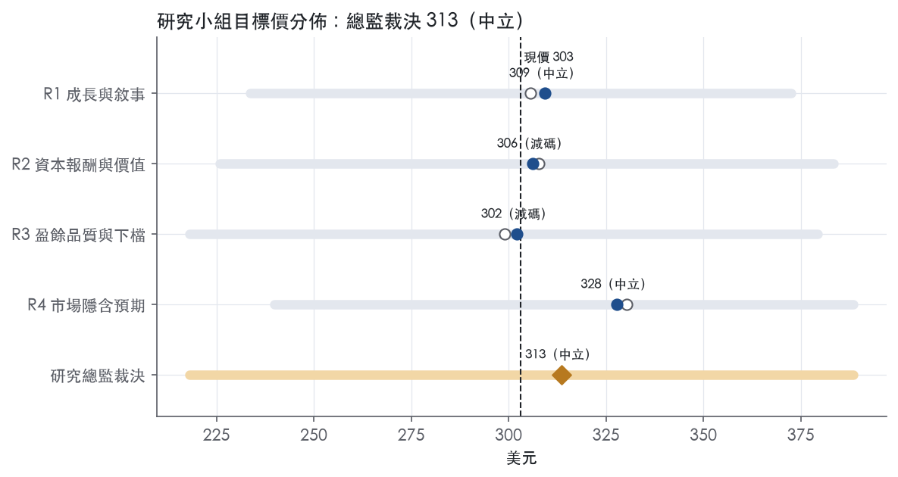
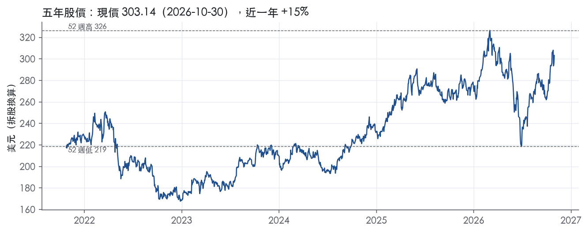

評等總表 › 金融 › CME
口徑校正後估值公允，中性｜評等 中立｜目標價 313
| 報告日 | 評等 | 目標價 | 當時股價 | 超額報酬 |
|---|---|---|---|---|
| 2026-10-30 | 中立 | 313 | 303 | -2.8% |
| 評等 | 中立（邊界，鄰近減碼） |
| 12 個月目標價 | 313 美元 |
| 現價 | 303.14 美元（2026-10-30） |
| 預期報酬 | 股價 +3.4%＋股息 3.7%＝總報酬 +7.1%；同業籃門檻 10.0%，超額 -2.8% |
| 估值方法 | P/E 24.4x，套在第 5–8 季的EPS（也就是一年後的未來四季） |
| 三情境 | 熊 218／基準 326／牛 388 |
| 研究流程 | 四位研究員兩輪辯論＋研究總監裁決 |
| 資料來源 | SEC EDGAR XBRL、Tiingo、FRED（全免費） |
口徑校正後估值公允，中性（研究總監裁決，四位研究員兩輪辯論後）
評等 中立（邊界，鄰近減碼）｜12 個月目標價 313 美元（總監三情境機率加權 319 與研究員中位數 308 各半）｜現價 303.14（2026-10-30）
預期報酬：股價 +3.4%＋股息 3.7%＝總報酬 +7.1%。同業籃門檻 10.0%，超額 -2.8%，離減碼的分界不到三個百分點，屬邊界評等（落在其他級距的機率約三成）。
估值方法：P/E 24.4x，套在第 5–8 季的EPS（也就是一年後的未來四季）。三情境：熊 218（20%）／基準 326（56%）／牛 388（24%）。
什麼會讓研究總監改變看法：FY2026Q4 業外明細證明 FY2025Q4 的高額業外是可重複的，代理值上修、立場偏多；FY2026Q4 每口費率跌破 0.66 且 ADV 年減，y1 下修至 4%、立場偏空。
| 過去四季（實際，FY2026Q3） | 未來四季 | 第 5–8 季 | 第 9–12 季 | |
|---|---|---|---|---|
| 營收（B） | 7.0B | 7.5B | 7.9B | 8.4B |
| 營收成長 | 9.0% | 7.0% | 6.5% | 6.0% |
| 營業利益率 | 65.7% | 77.0% | 77.0% | 76.5% |
| EPS（美元） | 12.23 | 12.47 | 13.34 | 14.12 |
| EPS 成長 | 18.2% | 1.9% | 7.0% | 5.8% |
| 每股股息（美元） | 11.30 | 11.30 | 11.30 | 11.30 |
| P/E（現價） | 24.8x | 24.3x | 22.7x | 21.5x |
| 股息殖利率（現價） | 3.7% | 3.7% | 3.7% | 3.7% |
過去四季為申報數字；預測為研究總監的假設、程式計算。倍數與殖利率都用現價計算，用來看現價對應各期獲利的高低。
| 情境 | 機率（歷史） | 故事 | 未來四季營收成長 | 第 5–8 季營益率 | 倍數 | 目標價 | 股價漲跌 |
|---|---|---|---|---|---|---|---|
| 熊 | 20%（19%） | 本行上行軟著陸路徑波動回落，ADV 對紀錄基期年減、費率再降，仿 FY2021 單年衰退後緩回升，倍數回到實現前瞻帶 P10；對應風險表第 1 條 | -3.0% | 72.5% | 20.0x | 218 | -28.0% |
| 基準 | 56%（59%） | 量能高位持平、費率受量級激勵小幅稀釋、市場數據靠調價續增，代理值 77%，倍數持平於實現前瞻帶 P50 | 7.0% | 77.0% | 24.4x | 326 | 7.4% |
| 牛 | 24%（22%） | 本行下行路徑（停滯性衰退、聯邦基金 3.88、利差 2.30）推升避險需求，量再創新高、營業槓桿抬升代理值，27.5x 在實現前瞻帶 P50 與 P75 之間 | 11.0% | 77.5% | 27.5x | 388 | 28.2% |
目標價由程式依研究總監的驅動與倍數計算；機率由研究總監給定。括號內是歷史頻率：把這檔股票過去十年 12 個月報酬的波動形狀，置中在基準情境，結果落在各情境附近的比例。

四位研究員用不同方法各自估值，回應研究總監的質疑後交出第二輪，最後由總監逐點裁決。各研究員的主張見第七章，裁決理由見第八章，完整論證見《研究底稿》。
| 立場（一輪→二輪） | 加權目標價（一輪→二輪） | 評等（一輪→二輪） | 第二輪倍數 | 熊～牛目標價 | |
|---|---|---|---|---|---|
| R1 成長與敘事 | 中性→看空 | 306→309 | 減碼→中立 | 25.0x | 234～372 |
| R2 資本報酬與價值 | 中性→中性 | 308→306 | 中立→減碼 | 24.0x | 226～383 |
| R3 盈餘品質與下檔 | 中性→看空 | 299→302 | 減碼→減碼 | 24.0x | 218～379 |
| R4 市場隱含預期 | 看多→中性 | 330→328 | 中立→中立 | 25.0x | 240～388 |
| 研究總監裁決 | 中性 | 313 | 中立 | 24.4x | 218～388 |
目標價由程式依各自的驅動與倍數計算；評等＝機率加權總報酬 − 同業籃門檻。
CME Group 是全球最大的衍生性商品交易所集團，靠「交易所＋清算所」雙引擎賺錢。公司自我定位為「the world's leading derivatives marketplace」，讓客戶交易期貨、選擇權、現金與店頭市場，優化投組並分析資料，協助全球市場參與者有效管理風險、捕捉機會¹。CME Group 旗下交易所提供涵蓋利率、股票指數、外匯、加密貨幣、能源、農產品與金屬六大資產類別中全球最廣的基準產品¹。公司透過 CME Globex 平台提供期貨與選擇權交易、BrokerTec 提供固定收益交易、EBS 平台提供外匯交易，另外還經營全球領先的中央對手方清算機構之一 CME Clearing¹。客戶主要是受監管機構與個人，收入高度依賴成交合約量，且在經濟與地緣政治不確定性升高時交易量往往上升²。
CME 本質上是單一清算與交易平台公司，收入結構分三塊：清算與交易手續費、市場數據與資訊服務、其他收入²。FY2025 清算與交易手續費 5,281.1M 美元，占總營收 6,520.6M 美元的絕大多數；市場數據與資訊服務收入 803.1M 美元，年增 13%；其他收入 436.4M 美元²。清算與交易手續費又以期貨與選擇權為主體，FY2025 總合約量達 7,060.4M 口，年增 6%，平均每口費率 0.696 美元，貢獻手續費 4,913.0M 美元²。按產品線拆分 FY2025 平均每日量：利率 14,203 千口（年增 4%）、股票指數 7,410 千口（+8%）、外匯 980 千口（-5%）、能源 2,695 千口（+8%）、農產品 1,853 千口（+8%）、金屬 988 千口（+34%）²。現金市場業務（BrokerTec 固定收益、EBS 外匯）FY2025 貢獻交易手續費 283.7M 美元，較 FY2024 的 276.7M 美元成長²。市場數據業務約 30% 收入來自兩大經銷商，集中度存在但公司認為風險可控²。整體而言利率與股票指數兩大類合計占合約量大宗，金屬與加密貨幣（Bitcoin、Ether 期貨）是成長最快但基數仍小的新興產品線。
CME 的客戶集中在受監管的清算會員與其背後的終端交易客戶，公司將大部分手續費向清算會員計收，FY2025 單一清算公司占清算與交易手續費比重達 12%²。公司認為即使該清算公司退出，其客戶交易量也可能轉移至其他清算會員，不構成重大集中風險²。通路上電子交易是主力，FY2025 電子交易量占總量 93%（FY2024 為 92%），CME Globex 平均每日量 26,163 千口，公開喊價僅 920 千口且限於 SOFR 選擇權，私下協商交易 1,046 千口²。地區上，10-K 未揭露按國家或區域劃分的營收數字，但 Q3 2026 新聞稿揭露非美國 ADV 達 900 萬口，創第三季新高，顯示海外客戶占比持續擴大¹。
FY2025Q4 營收 1.65B 美元，年增 8.1%，營益率 61.8%（is.revenue）。FY2026Q1 營收跳升至 1.88B 美元、年增 14.5%，營益率達 69.7%，為近八季最高（is.revenue），公司稱 2026 上半年是集團史上最強，第一季創下紀錄交易量³。FY2026Q2 公司營收為 1.7B 美元、營業利益 1.1B 美元，GAAP 淨利 1.0B 美元，稀釋每股盈餘 2.88 美元；調整後營業利益 1.2B 美元、調整後淨利 1.1B 美元、調整後稀釋每股盈餘 2.99 美元³。CEO Terry Duffy 表示第二季 ADV 達 2,980 萬口，為歷史第三高，市場數據收入增加 20% 至創紀錄的 238M 美元³；季內支付股利約 468M 美元、回購 695M 美元普通股³。FY2026Q3 營收同為 1.7B 美元、營業利益 1.1B 美元、淨利 1.0B 美元，稀釋每股盈餘 2.89 美元；調整後營業利益 1.2B 美元、調整後淨利 1.1B 美元、調整後稀釋每股盈餘 3.02 美元¹。公司稱第三季 ADV 達 2,940 萬口，為歷史同期新高，六大資產類別全數呈兩位數成長，市場數據收入創紀錄 243M 美元、年增 20%¹；期末現金 2.2B 美元、債務 3.4B 美元，季內以股利 465M 美元、回購 524M 美元共返還近 1B 美元給股東¹。整體趨勢是量能持續創高、市場數據成長穩定跑在兩成左右，但 Q2、Q3 營收與淨利較 Q1 高點略為回落、呈現高位震盪而非持續攀升。
公司策略聚焦於全球擴大期貨與選擇權業務、分散業務與營收來源，並透過與 Google Cloud 的合作提供客戶效率與營運優異性，持續發展成一個涵蓋更廣泛產品與資產類別的多元化金融交易所²。CEO 強調第三季在不確定性加劇下，客戶以創紀錄數量轉向 CME Group 管理風險、把握機會，並推出多項創新新產品，日均資本效益達到新高 1,000 億美元¹。公司也提到雲端遷移進展強勁，使 CME Group 成為唯一同時提供共置與雲端託管服務選擇的交易所，以擴大未來多年市場接觸¹。第二季新聞稿則點名新工具如單股期貨、1 盎司黃金 24/7 合約、美國公債清算與算力期貨，協助客戶管理風險並追求機會³。整體看，CME 的成長引擎是「量」與「新產品」雙輪，波動率上升是最大順風，雲端轉型是成本與客戶體驗的中期變數。公司對加密貨幣、金屬等新產品線的高速成長（如黃金 ADV FY2025 年增 58%）顯示其正積極把現有清算網絡效應延伸到新資產類別以維持營收多元化。資本配置上穩定將股利與回購並重，顯示現金流轉化能力是其估值支撐的核心基礎。

CME 的護城河評為「寬」，趨勢「穩定」，有把握未來 10 年以上維持經濟利潤，核心是基準合約的流動性網路效應與清算所的保證金鎖定。量化底稿的 ROE 並沒有乾淨地支持這個評級，主要是併購帶來的無形資產墊高了權益分母，下文「數字上看得到嗎」會正面處理這個衝突。
CME 的優勢來自三類：網路效應、轉換成本、無形資產（監管授權與基準品牌）；成本優勢與效率規模證據不足，不列入。
網路效應（最主要）：期貨流動性越集中，價差越窄、越吸引下一位交易者，CME 明確把費率工具用來強化這個循環。公司自述：「Customers benefit from volume discounts and limits on fees as part of our effort to increase liquidity in certain products.」²FY2025 利率產品平均每日量 14,203 千口，股票指數 7,410 千口，SOFR、美國公債與 E-mini S&P 500 等基準合約都集中在 CME²。網路效應的韌性也反映在清算會員集中度上：單一清算公司占清算與交易手續費 12%，但公司認為該公司若退出，客戶交易量會轉到「another clearing firm of the exchange」²。換句話說，流動性黏在交易所，不黏在中介商。
轉換成本：部位、保證金與違約基金都存放在 CME 清算所，客戶要搬到別的場所，等於拆掉既有的保證金抵銷、重新繳交擔保品。FY2025 融資活動現金流入 56,509.5M 美元，主要來自現金履約保證金與違約基金繳存增加²。可用於擔保清算所融資額度的違約基金達 $10.7 billion²。擔保品規模越大，客戶分散到第二個清算所的資金成本越高。
無形資產：CME 擁有難以複製的監管地位。CME 被 Financial Stability Oversight Council 指定為 systemically important financial market utility，CME、CBOT、NYMEX、COMEX 都是 CFTC 監管的 designated contract markets²。定價權是無形資產最直接的證據：FY2025 平均每口費率升到 0.696 美元，主因是 2025 年 2 月 1 日生效的費率調漲²。市場數據營收增加「largely attributable to price increases for certain products」²。
資料包提供的「Item 1」實際內容是營運結果與流動性段落，沒有競爭段落，因此本章無法引用公司對競爭者的自述。
利潤率面明確支持寬護城河，報酬率面則與寬護城河衝突，我們維持評級，但這個衝突必須讓估值端知道。
支持的部分：稅前利益率十年平均 59.9%，標準差 3.9%，最低 53.2%，最高 64.9%。在一個營收直接跟交易量連動的行業，這個波動度很小。資本需求很輕：FY2025 資本支出/營收 1.3%，FCF 4.19B 美元，淨利 4.07B 美元。公司自述：「The majority of our expenses do not vary directly with changes in our contract volume.」²
衝突的部分：量化底稿只提供 ROE，沒有 ROIC。ROE 十年平均 11.4%，只比 10.0% 的資本成本代理值高 1.5%；9 年中只有 4 年高於資本成本，最低曾到 8.0%。單看這組數字，連「窄」都難以有把握。
為什麼仍維持「寬」：第一，CME 的權益中有大量併購產生的無形資產，攤銷項目明列來自 CBOT Holdings、NYMEX Holdings 與 NEX 的收購²。P/TBV 達 7.7x，位於 5 年 98.9% 分位，代表有形權益相對很薄。ROE 衡量的是過去的收購價格，不是現有業務的經濟報酬。第二，ROE 最新值 14.8%，高於資本成本且趨勢向上。第三，近十年營益率最低點 53.2%，出現在 FY2019，同年營益率 53.2%；之後一路回升到 FY2025 的 64.9%，併購整合後利潤率修復完整。
評級的前提是：估值端應以有形資本報酬看待 CME，而不是以帳面 ROE 看待。若之後取得 ROIC 底稿，且 ROIC 也在資本成本附近，本章應下修為「窄」。
最大的侵蝕風險是監管與結構性分流，而不是景氣循環；量能隨波動起伏是收入週期，不是護城河問題。
目標倍數應相對交易所同業給予溢價，理由是基準利率合約的流動性與清算所擔保品鎖定，提供 10 年以上的經濟利潤能見度，且資本支出/營收僅 1.3%，盈餘幾乎全數可轉為 FCF。不過，溢價應以同業為基準，不宜高於自身歷史：現行 P/E 24.8x 已貼近 5 年中位數 25.0x，P/TBV 則已在 5 年 98.9% 分位，市場已大致反映護城河。若用帳面 ROE 推導合理倍數，會系統性低估 CME，建議改用有形資本或 FCF 殖利率框架。
| 指標 | 最新 | 十年平均 | 標準差 | 最低 | 最高 |
|---|---|---|---|---|---|
| 營業利益率 | 64.9% | 59.9% | 3.9% | 53.2% | 64.9% |
| FCF 利潤率 | 64.3% | 53.8% | 6.2% | 45.6% | 64.3% |
| ROE | 14.8% | 11.4% | 3.5% | 8.0% | 19.0% |
程式計算。資本成本代理值（10 年債＋5%）：10.0%；ROIC 平均減資本成本：—；ROIC 有資料的 0 年中，高於資本成本 0 年。
CME 的现金流與盈餘高度同步，FY2025 CFO 4.28B、FCF 4.19B 皆高於淨利 4.07B（is/cf.FY2025），LTM 現金轉換同樣健康（：FCF 4.33B）。但程式標出三次十年期淨利率巨幅跳動（FY2016→17、FY2017→18、FY2020→21）缺乏原文解釋，且（股利＋回購）／淨利三年平均已達 99.5%，逼近用舉債回饋股東的門檻，兩者合計讓盈餘品質不能評為「高」。
現金持續跟上甚至超過盈餘，過去十年 CFO 與 FCF 在每一個年度都大於淨利（is/cf.FY2016–FY2025）。以 FY2025 為例，淨利 4.07B、CFO 4.28B、FCF 4.19B，CFO/淨利 ratio 大於 1；LTM 口徑（LTM@FY2026Q3）營收 6.97B、FCF 4.33B，同樣顯示現金產生能力未落後於報表盈餘。這個型態在交易所／清算商業模式下合理，因為收入多為手續費現金收取，應計項目少，資本支出佔營收比也逐年下降至 1.3%–1.5%（量化底稿 FY2024–FY2025）。近八季數據也維持同樣型態，FY2026Q3 CFO 1.09B、FCF 1.07B 對淨利 1.04B，沒有看到現金落後盈餘的跡象。
公司在 Q3 2026 新聞稿中揭露：GAAP 營業利益 1.1B、調整後營業利益 1.2B；GAAP 淨利 1.0B、調整後淨利 1.1B；GAAP 稀釋 EPS 2.89、調整後 EPS 3.02¹。新聞稿只說明「調整項目詳見非GAAP結果調節表」，但本次提供的節錄並未附上該調節表的項目明細（SBC、攤銷、重組等）¹。在沒有明細的情況下，無法逐項判斷哪些調整是真實一次性成本、哪些是常態性費用被排除。可以確認的是調整幅度不大，GAAP 與 Non-GAAP EPS 僅差 0.13（2.89 對 3.02）¹，相對於 LTM GAAP EPS 12.23屬小幅度，顯示本季盈餘品質本身不靠非GAAP美化撐出來。由於看不到調節表，估值研究員若要用 Non-GAAP 數字，應先向公司索取完整調節表再決定是否接受調整項目。
槓桿低、資本配置偏向股東回饋。截至 2026-09-30，長期債務 3,425.1M（約 3.4B）、現金及約當現金 2,198.5M（約 2.2B）、股東權益 26,560.3M（約 26.6B）¹。相較 FY2025 年底現金 4,416.9M、股東權益 28,728.2M¹，現金在 2026 年前三季下滑約一半，主要用途是股東回饋：本季（Q3 2026）合計配發股利 465M 加回購 524M，合計近 1B 返還股東¹。計分表顯示（股利＋回購）／淨利 LTM 92.5%、三年平均 99.5%、十年平均 93.5%，三者皆為綠燈但三年平均逼近滿分比例。稀釋股數年變動 LTM -0.7%、三年平均 +0.1%、十年平均 +0.7%，顯示回購確實淨減少了流通股數而非只是抵銷增發。整體看，CME 把大部分盈餘透過股利與回購還給股東，而非靠舉債支撐，長期債務對股東權益比偏低（3.4B 對 26.6B），資產負債表沒有槓桿風險，但也代表未來盈餘成長必須靠量能與費率，而非財務工程。
紅旗一：淨利率 FY2016→FY2017 跳動 +69 個百分點。 此區間 EPS 從 4.53 跳到 11.94、淨利從 1.53B 跳到 4.06B，營收僅成長 1.4%（3.60B→3.64B）（is.FY2016、is.FY2017），淨利成長遠高於營收成長，判斷為一次性項目驅動，但本次提供的 10-K 節錄僅為目錄與 Item 1，未包含 Item 7 實際財務討論內容說明此跳動原因，無法在原文中找到具體揣測依據（10-K 節錄僅到 Item 1 Business）²。在缺乏原文佐證下，此紅旗維持「未解釋」狀態，不能排除是稅制或一次性收益造成（例如常見的稅改遞延稅負重評），但本報告不可臆測未出現在原文的具體原因。
紅旗二：淨利率 FY2017→FY2018 跳動 -66 個百分點。 淨利從 4.06B 降回 1.96B、EPS 從 11.94 降到 5.71，營收同期反而成長 18.2%（3.64B→4.31B）（is.FY2017、is.FY2018），走勢與紅旗一方向相反、幅度相近，型態上像是 FY2017 的一次性利得在 FY2018 迴轉基期，屬於同一組事件的鏡像。同樣地，提供的 10-K 節錄沒有 Item 7 的實際文字可以引用佐證，此紅旗也維持未解釋狀態²。
紅旗三：淨利率 FY2020→FY2021 跳動 +13 個百分點。 幅度遠小於前兩次，淨利從 2.11B 升到 2.64B，營收反而下滑 4.0%（4.88B→4.69B）（is.FY2020、is.FY2021），淨利率上升主要來自成本或非營業項目改善而非營收驅動，但同樣缺乏 10-K Item 7 原文佐證具體原因，列為可解釋性較低但幅度較小的次要紅旗。
計分表燈號本身沒有紅燈：SBC／營收、稀釋股數變動、股利＋回購／淨利三項全部綠燈，顯示股權稀釋與股東回饋機制本身健康，問題集中在歷史淨利率波動而非現金或資本配置結構。
估值應以 GAAP 盈餘為主要基礎，因為現金轉換本身良好（CFO、FCF 持續覆蓋淨利），不需要像對 SBC 加回型公司那樣大幅調整。但三筆未解釋的歷史淨利率跳動紅旗，加上本次缺乏非GAAP調節表明細，建議對 FY2016–FY2018 區間的歷史盈餘趨勢分析打折，不要把那幾年的 YoY 成長率直接套用在長期成長假設上。槓桿極低（長期債務 3.4B 對股東權益 26.6B）¹不構成限制估值倍數的理由，目前 24.8x trailing P/E 落在 5 年分位 44.9%，屬於歷史中段，估值倍數的空間應由量能與費率成長性決定，而非盈餘品質打折。
| 項目 | LTM | 近三年 | 十年 | 燈號 | 規則 |
|---|---|---|---|---|---|
| SBC／營收 | 1.4% | 1.5% | 1.7% | 綠 | ≤3.0% 綠、>8.0% 紅 |
| 稀釋股數年變動 | -0.7% | 0.1% | 0.7% | 綠 | ≤0.0% 綠、>3.0% 紅 |
| （股利＋回購）／淨利 | 92.5% | 99.5% | 93.5% | 綠 | ≥50.0% 綠、<0.0% 紅 |
程式計算；燈號以 LTM（無則近三年平均）判定。
| 風險 | 觸發指標（看什麼數字、在哪裡看） | 對 EPS 的影響方向與粗略幅度 | 未來 12 個月發生機率 | 出處 |
|---|---|---|---|---|
| 1. 波動率回落致合約量與平均費率雙降 | 季度 ADV（新聞稿公告）、總合約量年增率、平均每口費率（10-K/8-K 揭露）² | 負向，大：FY2025 總合約量年增 6% 貢獻淨增 289.7M 美元手續費，量能回落會直接反向拖累² | 中 | 10-K 年報 FY2025 Item 1（業務） |
| 2. 清算所信用／違約風險（結構性但尾部影響極大） | 保證金規模（performance bonds）、保證基金規模、是否觸發違約評估（10-K Item 7A、季報附註）⁴ | 負向，大（尾部情境）：2025 年底清算會員保證金存款達 347.3B 美元，若發生重大違約，公司需動用 100M 美元公司出資、8.3B 美元保證基金，甚至對未違約會員啟動最高 550% 的追加評估⁴ | 低 | 10-K 年報 FY2025 Item 7A |
| 3. 單一清算會員集中度 | 該清算會員占清算與交易手續費之比重（年報揭露） | 負向，中：FY2025 單一清算公司占清算與交易手續費 12%，公司認為客戶量可轉移但實際轉移速度與摩擦成本不確定 | 低 | 10-K 年報 FY2025 Item 1（業務） |
| 4. 市場數據經銷商集中度 | 兩大經銷商占市場數據收入比重（年報揭露） | 負向，中：約 30% 市場數據收入來自兩大經銷商，FY2025 該業務收入 803.1M 美元、年增 13%，若經銷關係生變衝擊成長動能² | 低 | 10-K 年報 FY2025 Item 1（業務） |
| 5. Google Cloud 雲端轉型的雙重成本與執行風險 | 技術支出年增率、專業服務費年增率（季報/年報揭露）、雲端遷移進度公告 | 負向，中：FY2025 技術費用 283.2M 美元，年增 11%，公司明確點名「在轉型期間維持地端與 Google Cloud 雙環境的重複成本」為前瞻風險因子¹ | 中 | 8-K 財報新聞稿（2026-10-21） |
波動率均值回歸是排序第一的風險，因為它直接打在收入結構的核心。 清算與交易手續費 FY2025 達 5,281.1M 美元，占總營收 6,520.6M 美元的絕大部分²。公司自己承認「收入與獲利能力隨合約量變動而波動」，且 FY2025–FY2026 的成長幾乎全部由市場波動率驅動——利率、股票指數、能源、金屬合約量的成長，10-K 逐一歸因於「關稅不確定性」「地緣政治緊張」「聯準會利率政策不確定性」等暫時性因子²。FY2026Q3 ADV 達 2,940 萬口，創歷史同期新高，六大資產類別全數兩位數成長¹，這代表基期已經很高。一旦這些不確定性消退（例如關稅落地、Fed 政策路徑明朗化），ADV 與平均每口費率都可能同步下滑，而公司成本結構「多數不隨合約量變動」²，意味收入降速會直接放大到營益率與 EPS。這是五條風險裡機率中等、但影響幅度最大、也最容易被月度 ADV 數字監測到的一條。
清算所信用風險是尾部風險，機率低但一旦發生衝擊極大。 CME 的清算所作為所有交易的對手方，承擔清算會員及其客戶的信用風險，10-K 明言「無法保證這些措施足以在重大違約事件中保護公司」⁴。2025 年底保證金與保證基金合計規模達 347.3B 美元⁴，規模本身就說明一旦發生多重違約，公司可動用的公司出資僅 100M 美元（期貨選擇權）或 150M 美元（利率交換），遠小於潛在缺口，之後需依序動用其他會員的保證基金，甚至對未違約會員課以最高 550% 的追加評估⁴。這條風險不會在正常財報週期顯現，但監測指標明確：保證基金規模、是否有清算會員出現保證金追繳延遲的公告。
單一清算會員與市場數據經銷商集中度是結構性但公司自評「風險可控」的項目，我們認為仍值得單獨列出監測。 一家清算公司占 FY2025 清算與交易手續費 12%²，公司認為該會員若退出，客戶交易量會轉移至其他會員，但轉移過程中的摩擦成本、短期收入缺口未被量化。市場數據業務約 30% 收入來自兩大經銷商²，而這項業務是近年成長最快的次業務（FY2025 年增 13%，FY2026Q3 年增 20% 至 243M 美元）²¹，經銷商關係生變會直接衝擊這條成長曲線，即使公司認為終端客戶可能直接續約。
Google Cloud 轉型是少數會持續侵蝕費用端的已知風險，且公司在新聞稿前瞻聲明中主動點名。 8-K 前瞻性聲明明確列出「管理 CME Group 轉向 Google Cloud 相關的變動成本，並在轉型期間盡量減少同時維護地端與 Google Cloud 雙環境的重複成本」為可能影響績效的因子之一¹。FY2025 技術費用年增 11%、達 283.2M 美元，公司將此歸因於「支持 Google Cloud 轉型專案的第三方服務授權費及軟體授權費增加」²。這條風險機率中等（轉型已在進行、費用增加已發生），影響幅度中等，是可以每季用「技術費用年增率」持續追蹤的指標。
1.非美國業務占比上升帶來的地緣政治與監管曝險。 FY2026Q3 新聞稿揭露非美國 ADV 達 900 萬口，創第三季新高¹，但 10-K 並未按地區拆分營收或詳述海外監管風險的財務影響。隨著海外客戶占比擴大，公司對外國主管機關（如歐盟、英國監管規則變動）的曝險上升，但目前無法從財報數字直接量化此風險對 EPS 的衝擊，建議持續追蹤非美國 ADV 占比變化作為領先指標。
2.非營業收入（投資收益）對淨利的貢獻度已大到足以扭曲「核心獲利」的解讀。 FY2025 投資收益達 5,736.5M 美元、年增 41%，其中絕大部分來自保證金再投資利息 5,253.6M 美元²，但同時「其他費用」項下又要把其中約 4,842.5M 美元分配給清算會員²。這兩個數字幾乎互相抵銷，意味淨利波動對利率水準（如聯邦基金利率）的敏感度遠高於一般投資人從「核心手續費」角度想像的程度。10-K 本身未將此列為獨立風險因子討論其對 EPS 的放大效應，但若聯準會降息路徑加速，分配後的淨投資利差收窄速度值得單獨監測（監測指標：fed_funds 利率變化、investment income 年增率）。
現價 303.14 對應 trailing（過去四季）P/E 24.8x、EV/EBITDA —、EV/EBITA —、EV/Sales —、FCF 殖利率 4.0%。主要估值倍數 P/E 現在 24.8x，落在5 年區間第 45 百分位（P10／P50／P90 = 22.6x／25.0x／29.9x）。

把程式的機械基準預測放到現價下，市場付的前瞻倍數是：P/E（未來四季） 28.3x、P/E（第 5–8 季） 26.3x。
| 倍數 | 現在 | 5 年 P10 | 5 年 P50 | 5 年 P90 | 現在分位 | 全期 P50 |
|---|---|---|---|---|---|---|
| P/E | 24.8x | 22.6x | 25.0x | 29.9x | 44.9% | 26.1x |
| P/S | 15.6x | 12.8x | 14.4x | 17.2x | 76.4% | 14.5x |
| P/FCF | 25.1x | 21.5x | 23.7x | 34.0x | 67.7% | 25.5x |
trailing 倍數（股價 ÷ 過去四季）；分位以每個交易日計算。
同業籃：ICE, NDAQ, CBOE, SPGI, MSCI（手動名單（playbooks/peers.yaml））。評等門檻 10.0%：同業「倍數不變下持有一年」的隱含報酬中位數（＝ FCF 殖利率 ×(1＋g)＋g，g 為 5 年營收年複合成長並夾在 −2%～8%），每家夾在 0～15%、P/E 低於 5 倍視為資料可疑而排除，中位數再限制在 10 年債到 10 年債＋5% 之間（同業原始中位數 11.7%）。
| 代號 | 市值 | 5 年營收 CAGR | 營益率 | ROIC | P/E | 5 年 P/E 中位數 | EV/EBITDA | P/FCF | 隱含報酬 |
|---|---|---|---|---|---|---|---|---|---|
| CME | 108.7B | 6.0% | 65.7% | — | 24.8x | 25.0x | — | 25.1x | 10.2% |
| ICE | 94.2B | 8.9% | 40.6% | 7.7% | 23.1x | 30.2x | 16.5x | 17.9x | 12.7% |
| NDAQ | 59.3B | 8.0% | 29.8% | 9.2% | 29.1x | 27.7x | 23.4x | 26.3x | 11.7% |
| CBOE | 35.0B | 6.6% | 36.4% | 22.8% | 23.8x | 28.1x | 16.6x | 13.8x | 11.1% |
| SPGI | 135.3B | 15.6% | 45.1% | 11.8% | 27.8x | 39.6x | 15.9x | 25.7x | 11.9% |
| MSCI | 44.7B | 13.1% | 55.7% | 44.5% | 33.2x | 40.2x | 26.4x | 28.4x | 11.3% |
| 同業中位數 | 8.9% | 40.6% | 11.8% | 27.8x | 30.2x | 16.6x | 25.7x | 10.0% |
全部 trailing，程式以各公司 SEC XBRL 與 Tiingo 行情計算；第一列為本檔。
P/E 相對同業中位數：現在 -10.9%，過去 1 年平均 -12.2%、3 年 -22.9%、5 年 -18.8%。

事後實現前瞻倍數帶（P/E，2018-11-19..2025-11-17）：P10／P50／P90 = 20.3x／24.4x／33.4x。它是每個交易日的股價除以之後四季實際實現的指標；一年後，今天的第 5–8 季正是那時的未來四季，所以這條帶是 12 個月目標價的同口徑倍數。因為用的是事後實際而非當時預期，過去成長超乎預期的公司這條帶會偏低。
程式的機械基準（成長率從過去四季年增率三年收斂到 6%、利潤率持平）用 事後實現前瞻 P/E P50 估值得到 281（-7.2%），市場現行前瞻倍數（現價 ÷ 基準 未來四季指標）一年後持平，套在基準 第 5–8 季指標得到 326。這兩個數字只是參考點，不是本報告的目標價；研究員對這個定價的回應在第七章。
下表是每位研究員第一輪（各自獨立）與第二輪（回應研究總監的質疑後）的結果。目標價全由程式依各自的假設計算。
| 立場（一輪→二輪） | 加權目標價（一輪→二輪） | 評等（一輪→二輪） | 第二輪倍數 | 熊～牛目標價 | |
|---|---|---|---|---|---|
| R1 成長與敘事 | 中性→看空 | 306→309 | 減碼→中立 | 25.0x | 234～372 |
| R2 資本報酬與價值 | 中性→中性 | 308→306 | 中立→減碼 | 24.0x | 226～383 |
| R3 盈餘品質與下檔 | 中性→看空 | 299→302 | 減碼→減碼 | 24.0x | 218～379 |
| R4 市場隱含預期 | 看多→中性 | 330→328 | 中立→中立 | 25.0x | 240～388 |
| 研究總監裁決 | 中性 | 313 | 中立 | 24.4x | 218～388 |
目標價由程式依各自的驅動與倍數計算；評等＝機率加權總報酬 − 同業籃門檻。
分歧度：第一輪 加權目標價 299～330（區間＝現價的 10%）· 倍數 24～25x · 立場 中性×3、看多×1；第二輪 加權目標價 302～328（區間＝現價的 8%）· 倍數 24～25x · 立場 看空×2、中性×2。

| 研究員 | 第二輪主張 | 堅持的理由 |
|---|---|---|
| R1 成長與敘事 | 偏空，倍數 25x，營收成長 7%，一年報酬輸給門檻。 | 盈餘只用最近三季校準，排除 FY2025Q4 偏高的業外收益。 |
| R2 資本報酬與價值 | 中性，倍數 24x，營收成長 6%，倍數停在自家中位。 | 部分盈餘來自保證金利息，會隨利率起落，所以倍數取略低的 24x。 |
| R3 盈餘品質與下檔 | 偏空，倍數 24x，營收成長只給 4%，盈餘站在高基期上。 | CME 相對同業的折價已收窄到 −10.9%，倍數不該再往上調。 |
| R4 市場隱含預期 | 中性，倍數 25x，營收成長 7.5%，市場低估了實際盈餘。 | 市場的基準盈餘漏掉業外收益，實際盈餘應該上修。 |
每位研究員的逐條回應與完整論證見《研究底稿》（CME_研究底稿_2026-11-01.docx）。
| 分歧點 | R1 | R2 | R3 | R4 | 什麼資料會分出勝負 |
|---|---|---|---|---|---|
| 營收成長 y1／y2 | 7%／6.5%：Q3 ADV 創同期新高、六類資產兩位數 | 6%／5.5%：高基期、費率稀釋 | 4%／5.5%：量 +3%、費率持平、Q1'27 對 1.88B | 7.5%／7%：量高位持平、費率小幅稀釋 | 2027-02 FY2026Q4 營收年增與每口費率；2027-04 FY2027Q1 對 1.88B 基期 |
| 稅前代理值水準與路徑 | 77.5／76.8／75.6：業外固定 0.9B 不隨營收放大 | 77／76／76：技術費用壓報表營益率至 63.5% | 77／77／77：Q2–Q3 校準，雙環境成本已在運行率 | 76.5 平：口徑校正，撤回升息擴大利差 | FY2026Q4 業外明細；技術費用年增率；FY2027Q1 報表營益率 |
| 目標倍數與口徑 | 25x@ntm，自家 5 年 P50 | 24x@q5_q8，實現前瞻 P50 下方 | 24x@q5_q8，同業折價已收窄 | 25x@q5_q8，實現前瞻帶偏低 | 2027-10 trailing P/E 是否留在 3 年 P10–P90 |
| 熊情境深度與倍數 | −2／+3%，74%，21x | −2／+3%，73%，20x | −3／+2%，72.5%，20x，風險表第 1 條 | −4／+4%，73.5%，21.5x | 月度 ADV 是否連兩月低於 2,400 萬口（R3 假設門檻）；費率是否破 0.66 |
| 牛熊機率與順序 | 24／53／23 | 18／60／22 | 18／61／21 | 26／52／22 | 程式歷史對照；本行總經路徑機率 |
一、營收成長：選 R1（7%／6.5%）。 FY2026Q3 營收年增 13.0%、ADV 2,940 萬口創同期新高、六大資產類別全數兩位數（最近八季表；8-K 2026-10-21），但這個 13% 有相當部分是基期：FY2025Q3 年增 −3.0%。季別型態 +14.5%、+0.8%、+13.0% 交替（最近八季表），是高位震盪不是加速。往前看，FY2027Q1 要對上 1.88B 的紀錄季，每口費率由 FY2025 的 0.696 滑到 Q3 的 0.679，10-K 明寫調價被量級激勵抵銷（10-K FY2025 Item 1；8-K 2026-10-21）——這兩點是機械基準 8% 要打折的理由。R3 的 4% 缺口在量：量只 +3% 和六類資產全數兩位數、非美國 ADV 創新高對不上，也和本行路徑（再升兩碼、通膨黏）會延續利率不確定性的前提相反；市場數據年增 20% 至 243M、FY2025 年增 13% 主要來自調價，是不靠波動的成長。本研究部紀錄：四位營收誤差中位數全部偏低（−0.4%～−0.7%），機械基準 0.0%，所以不取最低的那一個。R4 的 7.5% 與基準 8% 的缺口在費率稀釋未扣足。y2 取 R1 的 6.5%，向 5 年 CAGR 6.0%（同業表）收斂；R2 的 5.5% 來自營收勝率 46% 的研究員且無個股證據。
二、稅前代理值：選 R3（77% 平），y3 微調至 76.5%。 四人都同意金融業模型把營業利益當稅前利益，漏掉保證金再投資淨額與合資收益，基準 NTM EPS 10.73 低於 LTM GAAP EPS 12.23是模型錯，這點不裁。水準上 R2、R3 同為 77%，以乾淨的 Q2–Q3（EPS 2.88／2.89，營益率 64.9%／65.7%；最近八季表）校準，排除 FY2025Q4 淨利 1.18B 高於營業利益的異常季。路徑上 R1、R2 要逐年下滑，機制各一：R2 用技術費用 283.2M、年增 11% 把報表營益率壓到 63.5%，但 8-K 寫的是「during the transition」的重複成本（8-K 2026-10-21），R3 在 Q4 已指出找不到持續三年的機制，R2 沒補上；R1 用業外淨額固定、不隨營收放大，機制成立（投資收益 5,736.5M 中約 4,842.5M 分配給會員，留存的是淨額；10-K FY2025 Item 1），但保證金餘額與合資收益隨活動量成長，且 10-K 說多數費用不隨量變動，6.5% 的營收成長帶來的營業槓桿足以抵銷 y2 的稀釋。紀錄也支持 R3：營業利益誤差中位數 R3 +0.6%，R1 +2.6%、R4 +1.8% 偏高，R2 −1.1% 偏低。y3 我接受 R1 的機制下修 0.5pp（假設），兼顧我自己 +0.9% 的偏高紀錄；y3 不進 Q5–Q8 目標價。
三、倍數：own，24.4x，eps@q5_q8，錨＝事後實現前瞻帶 P50 本身。 R2、R3、R4 都錨在 24.4x，分歧只是往下還是往上半轉。R2、R3 往下的理由——盈餘含隨政策利率起落的利息留存、雙環境成本、相對同業折價由 5 年平均 −18.8% 收窄到 −10.9%（同業表）——都已在現價與這條帶裡；純交易所同業 ICE 23.1x、CBOE 23.8x 的降評對 CME 對照意義有限，CME 營益率 65.7% 對同業中位 40.6%、護城河寬（護城河章）本就該有對它們的溢價。R4 往上的理由——帶在成長期偏低——方向對，但 R2 的 V5 同樣成立：trailing 24.8x 的分母含 FY2025Q4 的 EPS 3.28，乾淨口徑下現價並不便宜，和 10 年 P50 26.1x相當，沒有空間再往上。程式表列的市場持平倍數 28.3x 是以未含業外的基準 EPS 算的，不是市場真的付 28x；以校正後 EPS 看，現價付的前瞻倍數與實現前瞻帶 P50 相當（假設；R4 第二輪論證），所以 24.4x 的意思是「倍數不變、只賺盈餘成長與股利」，符合第 7 條：沒有人用利率壓倍數，我也沒有個股理由讓市場付得更少或更多。R1 的 25x@ntm 是同一件事的 trailing 口徑：R1 313.69 與 R2 312.56 幾乎相同。
四、熊情境：選 R3。 四人的熊都是本行上行路徑（軟著陸、波動回落）對應風險表第 1 條，差在深度。R3 的 −3%／+2%、代理值 73／72.5%（報表營益率假設 63%）、20x：營收路徑有 FY2021 −4.0% 後 FY2022 +7.0% 的先例（FY2022），衰退年營益率 56.4% 還高於前一年說明去槓桿不致崩塌；20x 是實現前瞻帶 P10 20.3x，量縮加上相對折價回到歷史水準，取 P10 合理；R3 熊情境 218.14正好貼在 52 週低點 218.58（快照）。R4 的 21.5x（P25）在量價齊跌情境裡偏淺，且他沒拿到風險表；R1、R2 的 −2% 與 R3 差別不大，但 R3 營業利益紀錄最接近無偏，下檔由他定。
五、機率順序：選 R4 的方法，數字依我的距離重估。 R2、R3 把置中分布左偏算了兩次。歷史對照（程式）：+19%／−26% 得 23／23，+23%／−28% 得 19／22，+16%／−28% 得 26／22。我的牛即 R4 的（388.49），熊即 R3 的（218.14），熊比四位都深，熊機率應低於他們的 21–23%，牛約 23%（假設）。本行前提給 CME 有利的停滯性衰退路徑 25%、不利的軟著陸路徑 20%，是公司特有的順序證據，牛再上一個百分點。
漂移與總經偏離。 無退回。R2 靠攏比例 69% 是因第一輪 308 對中位數 306 距離極小、第二輪只動 −0.5%（漂移表），五項修正皆回應我的意見並附證據（異常季、10-K 技術費用），不是無證據靠攏；R1 +1.2%、R3 +1.1%、R4 −0.8% 同理。四人 macro_deviations 皆空；牛放本行下行路徑、熊放上行路徑是前提允許的對公司有利／不利路徑，全部接受。總經敏感度兩項 |t| 小於 2，前提隱含 −0.3% 不採。
與機械基準不同的驅動：
目標倍數 24.4x，eps，第 5–8 季，錨＝事後實現前瞻帶 P50 24.4x，口徑一致不換算。相對同業：CME 24.8x 對同業中位 27.8x 的折價 −10.9%（同業表）維持，不假設收斂也不假設回到 −18.8%；相對自家 trailing 帶：一年後 trailing 倍數大致在 10 年 P50 26.1x 附近（假設），和乾淨口徑的現在相當。低於程式持平倍數 28.3x 是 EPS 口徑差異，不是降評。
三個機率與歷史對照的差距在 10 個百分點內。牛高於熊的依據在裁決五：程式對 R1、R4 的對照本就牛≥熊，加上本行路徑機率 25% 對 20%；這是對本研究部 22 份報告一律熊大於牛的修正。熊比四位研究員都深，20% 低於他們的 21–23%。
差距在口徑，不在看法：程式的基準 EPS 漏掉業外淨額，才算出市場付 28.3x；以 GAAP 實際盈餘看，市場付的是實現前瞻帶中位數，和我們一樣預期 7% 上下的營收成長與 77% 附近的代理值。程式的市場持平參考點 326（總報酬 11.3%）說明倍數不變時一年總報酬約等於盈餘成長加 3.7% 股息、略過門檻 10.0%；但熊情境 218.14 離基準比牛情境 388.49 更遠，加權後貼在門檻附近，立場中性，與程式評等一致。我們沒有優勢可宣稱：盈餘沒有被低估，倍數沒有被高估。
現價 303.14 → 點估目標價 326 → 機率加權目標價 319 → 目標價 313，差距拆成五段：成長順延 +23 美元（市場現行倍數 28.3x 一年後持平、獲利照機械基準）；倍數差 -44 美元（總監倍數 24.4x vs 市場持平倍數 28.3x，同一機械基準預測）；盈餘差 +44 美元（總監預測的第 5–8 季EPS 0.0B vs 機械基準 0.0B，同一倍數）；情境不對稱 -6 美元（機率加權減點估）；研究小組平均 -6 美元（總監機率加權 319 與研究員第二輪中位數 308 各半）。各段相加等於目標價減現價。本階段未接賣方共識，差距以市場隱含預期為對照。
| 驅動 | 機械基準 | 研究總監 | 差異 |
|---|---|---|---|
| 未來四季營收成長 | 8.0% | 7.0% | -1.0 pp |
| 第 5–8 季營收成長 | 7.0% | 6.5% | -0.5 pp |
| 第 9–12 季營收成長 | 6.0% | 6.0% | ＝ |
| 未來四季營益率 | 65.7% | 77.0% | +11.3 pp |
| 第 5–8 季營益率 | 65.7% | 77.0% | +11.3 pp |
| 第 9–12 季營益率 | 65.7% | 76.5% | +10.8 pp |
| D&A／營收 | 1.7% | 1.7% | ＝ |
| 資本支出／營收 | 1.3% | 1.3% | ＝ |
| SBC／營收 | 1.4% | 1.4% | ＝ |
| 稅率 | 22.4% | 22.4% | ＝ |
| 股數年變動 | -0.5% | -0.5% | ＝ |
研究總監只寫偏移，未寫的沿用基準。
| 期 | 營收 | 成長 | 營益率 | 營業利益 | EBITDA | EBITA | 淨利 | EPS | FCF | 期末淨負債 |
|---|---|---|---|---|---|---|---|---|---|---|
| 未來四季 | 7.5B | 7.0% | 77.0% | 5.7B | 5.9B | 5.7B | 4.5B | 12.47 | 4.6B | -0.5B |
| 第 5–8 季 | 7.9B | 6.5% | 77.0% | 6.1B | 6.2B | 6.1B | 4.7B | 13.34 | 4.9B | -1.3B |
| 第 9–12 季 | 8.4B | 6.0% | 76.5% | 6.4B | 6.6B | 6.4B | 5.0B | 14.12 | 5.1B | -2.4B |
程式依上表的驅動計算；季度用最近四季季節性分攤；不含營運資金變動。
估值方法：P/E 24.4x，套在第 5–8 季的EPS（也就是一年後的未來四季）。研究總監目標倍數的錨：事後實現前瞻 P/E 帶 P50 24.4x 本身，不往上也不往下：以校正業外淨額後的 EPS 看等於倍數持平；低於程式持平 28.3x 是基準 EPS 漏計業外的口徑差異；對同業中位折價 −10.9% 維持。
計算：EPS（第 5–8 季） 13.34 × 24.4x → 點估目標價 326（7.4%）；隱含 P/E（未來四季）26.1x、P/E（第 5–8 季）24.4x、EV/EBITDA（第 5–8 季）18.4x、FCF 殖利率（第 5–8 季）4.2%。
總監三情境機率加權目標價 319，研究員第二輪中位數 308，兩者各半＝目標價 313；預期報酬 股價 +3.4%＋股息 3.7%＝總報酬 +7.1%；減評等門檻 10.0%（同業籃隱含報酬中位數（ICE, NDAQ, CBOE, SPGI, MSCI））＝超額報酬 -2.8% → 評等 中立（超額 >+15% 買進、+5～+15% 加碼、±5% 中立、−5～−15% 減碼、<−15% 賣出）。同一份資料重開研究小組，超額約有正負四個百分點的雜訊（一個標準差，二十檔實測）；以此估計，評等落在其他級距的機率約三成。超額離減碼的分界不到三個百分點，應視為邊界評等。
| 情境 | 機率 | 未來四季成長 | 第 5–8 季成長 | 第 5–8 季營益率 | EPS（第 5–8 季） | 倍數 | 目標價 |
|---|---|---|---|---|---|---|---|
| 熊 | 20% | -3.0% | 2.0% | 72.5% | 10.91 | 20.0x | 218 |
| 基準 | 56% | 7.0% | 6.5% | 77.0% | 13.34 | 24.4x | 326 |
| 牛 | 24% | 11.0% | 8.0% | 77.5% | 14.13 | 27.5x | 388 |
| 主張 | 驗證日 | 看哪個數字 | 門檻 |
|---|---|---|---|
| FY2026Q4 營收年增至少 6% 且每口費率不低於 0.67 | 2027-02-15 | FY2026Q4 營收年增率（基期 1.65B）與每口費率（8-K） | >= 6% 且 >= 0.67 |
| FY2027Q1 營收不低於紀錄基期 1.88B | 2027-05-05 | FY2027Q1 營收年增率（基期） | >= 0% |
| FY2027Q2 GAAP 稀釋 EPS 不低於 FY2026Q2，驗證業外淨額口徑 | 2027-08-15 | FY2027Q2 GAAP 稀釋 EPS（基期 2.88） | >= 2.88 |
| CME trailing P/E 留在 3 年 P10–P90 之間 | 2027-10-29 | trailing P/E | 22.4x–27.6x |
到期由程式結算（第 5 階段帳本）。
內文上標數字對應下列公司申報文件；未標上標的分析與判斷，是研究小組的觀點。報告中的每個數字都經程式逐一核對資料包或原文。
| 期 | 營收 | 成長 | 毛利率 | 營益率 | EBITDA | 淨利 | EPS | CFO | FCF | ROIC | 淨負債 | 稀釋股數 |
|---|---|---|---|---|---|---|---|---|---|---|---|---|
| FY2016 | 3.6B | — | — | 61.2% | 2.3B | 1.5B | 4.53 | 1.7B | 1.6B | — | — | 0.3B |
| FY2017 | 3.6B | 1.4% | — | 63.4% | 2.4B | 4.1B | 11.94 | 1.8B | 1.7B | — | — | 0.3B |
| FY2018 | 4.3B | 18.2% | — | 60.5% | 2.7B | 2.0B | 5.71 | 2.4B | 2.3B | — | — | 0.3B |
| FY2019 | 4.9B | 13.0% | — | 53.2% | 2.7B | 2.1B | 5.91 | 2.7B | 2.4B | — | — | 0.4B |
| FY2020 | 4.9B | 0.3% | — | 54.0% | 2.8B | 2.1B | 5.87 | 2.7B | 2.5B | — | — | 0.4B |
| FY2021 | 4.7B | -4.0% | — | 56.4% | 2.8B | 2.6B | 7.29 | 2.4B | 2.3B | — | — | 0.4B |
| FY2022 | 5.0B | 7.0% | — | 60.1% | 3.2B | 2.7B | 7.40 | 3.1B | 3.0B | — | — | 0.4B |
| FY2023 | 5.6B | 11.1% | — | 61.6% | 3.6B | 3.2B | 8.86 | 3.5B | 3.4B | — | — | 0.4B |
| FY2024 | 6.1B | 9.9% | — | 64.1% | 4.0B | 3.5B | 9.67 | 3.7B | 3.6B | — | — | 0.4B |
| FY2025 | 6.5B | 6.4% | — | 64.9% | 4.3B | 4.1B | 11.16 | 4.3B | 4.2B | — | — | 0.4B |
SEC XBRL；每股數據已依拆股換算到現在股數基準。EBITDA 空白 = 該年無形攤銷在 companyfacts 中缺 tag。
| 期 | 期末 | 推導 | 營收 | 毛利率 | 營益率 | EBITDA | 淨利 | EPS | CFO | FCF | 現金 | 總債務 |
|---|---|---|---|---|---|---|---|---|---|---|---|---|
| FY2023Q4 | 2023-12-31 | Q4 | 1.4B | — | 60.0% | — | 0.8B | 2.27 | 1.0B | 1.0B | 2.9B | — |
| FY2024Q1 | 2024-03-31 | 1.5B | — | 64.5% | 1.0B | 0.9B | 2.35 | 0.9B | 0.9B | 1.4B | — | |
| FY2024Q2 | 2024-06-30 | 1.5B | — | 65.3% | 1.1B | 0.9B | 2.42 | 0.8B | 0.8B | 1.8B | — | |
| FY2024Q3 | 2024-09-30 | 1.6B | — | 64.6% | 1.1B | 0.9B | 2.50 | 1.0B | 1.0B | 2.3B | — | |
| FY2024Q4 | 2024-12-31 | Q4 | 1.5B | — | 62.1% | — | 0.9B | 2.43 | 1.0B | 1.0B | 2.9B | — |
| FY2025Q1 | 2025-03-31 | 1.6B | — | 67.5% | 1.2B | 1.0B | 2.62 | 1.1B | 1.1B | 1.4B | — | |
| FY2025Q2 | 2025-06-30 | 1.7B | — | 66.7% | 1.2B | 1.0B | 2.81 | 1.1B | 1.0B | 2.0B | — | |
| FY2025Q3 | 2025-09-30 | 1.5B | — | 63.3% | 1.1B | 0.9B | 2.49 | 1.0B | 0.9B | 2.4B | — | |
| FY2025Q4 | 2025-12-31 | Q4 | 1.6B | — | 61.8% | — | 1.2B | 3.28 | 1.1B | 1.1B | 4.4B | — |
| FY2026Q1 | 2026-03-31 | 1.9B | — | 69.7% | 1.4B | 1.2B | 3.18 | 1.3B | 1.2B | 2.4B | — | |
| FY2026Q2 | 2026-06-30 | 1.7B | — | 64.9% | 1.2B | 1.0B | 2.88 | 0.9B | 0.9B | 2.1B | — | |
| FY2026Q3 | 2026-09-30 | 1.7B | — | 65.7% | 1.2B | 1.0B | 2.89 | 1.1B | 1.1B | 2.2B | — |
流量項目由 10-Q 的年初至今數拆成單季；Q4 = 年度 − 九個月。

本報告由 equity-desk 多代理系統產出，建置中版本，僅供內部研究與方法驗證，不構成投資建議。所有數字以 datapack.json 為準。